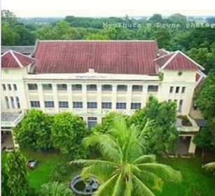

University Journal of ICT in Multidisciplinary Issues on Arts & Science
Engineering,Economics and Education (Volume-1)

"ICT in Multidisciplinary"
Foster to explore the new cotributions of the heterogeneous subjects engaged with ICT,as consequences
motivate researchers around the universities to
come out new research ideas on their professional.
Area of interest
Computer Science and Technology
Education
Computer Science and Technology
- Natural Language Processing
- Distributed Computing
- Artificial Intelligence
- Cloud Computing
- Data Science
- Image and Digital Signal Processing
- Software Engineering and web Engineering
- Database Management System and Information Retrievel
- Embedded System and INternet of Things(IOT)
- Networking and Security
- Maths
- Statistical & Mathematical Computing
- Engineering Maths
- Environmental Studies
- Geography related with ICT
- Applied Science
- Physics
- Natural Science
- Engineering Physics
- Myanmar Language (Written in English)
- English Language Learning and Teaching
- International Relations
- International Relations related in ICT
- Electronic and Electrical Engineering
- Electrical Power
- Information Technology
- Chemical Engineering
Education
Editorial Chair
Dr.Yuzana
Editorial Board
Dr.Yuzana
- Thitinan Pongsudhirank
- Dr.Kenki Adachi
- Dr.Supavadee Aramvith
- Dr.Zaw Zaw Aung
- Dr.Marlar
- Dr.Nilar Myint Htoo
- Dr.Thidar
- Dr.Nilar Aung
- Dr.Ye Kyaw Thu
- Dr.Yin Myo Thu
- Dr.Soe Moe Tun
- Dr.Kay Thwe Hlaing
- Dr.Moe Thandar Kyi
- Dr.Win Zaw
- Dr. Soe Soe Aye
- Dr. Tin Zaw Thaw
- Dr. Hlaing Htake Khaung Tin
- Dr. Thet Mar Tun
- Dr. Naw Wai Wai Sin
- Daw Myo Myo Khin
- Daw Nyunt Nyunt Htwe
- Daw Nu Nu Win
Contact Person
Dr. Yuzana Dr. Tin Zar Thaw
09-794065357 09- 421037973
Contact mail : journal@ucsh.edu.mm
Dr. Yuzana Dr. Tin Zar Thaw
09-794065357 09- 421037973
Contact mail : journal@ucsh.edu.mm
SUBMISSION OF PAPERS
Authors are invited to submit the RESEARCH paper about 6 pages in Microsoft Word file formula as attached all manuscripts will be peer-reviewed by the Technical Program Committee and Editorial Board. The paper must submit your paper through email: journal@ucsh.edu.mm Template of paper can be download from the site: ujim-ucsh.org
IMPORTANT DATES Deadline: 9 May 2020
Revised: 27 May 2020
Deadline for Camera Ready: 29 May 2020
REGISTRATION FEES Last Date of Registration: 6 June 2020
Registration Fees: 20000 Kyats Account: KBZ Bank Account No. 01830201800911901
All Accepted paper will be published and UJIM proceedings will be provided for each author.
For paper template, Click here (.docx) and (.pdf)
For copyright agreement, Click here (.docx) and (.pdf)
For ERC recommendation, Click here (.docx) and (.pdf)
For rector recommendation, Click here (.docx) and (.pdf)
For admission,Click here (.docx) and (.pdf)
IMPORTANT DATES Deadline: 9 May 2020
Revised: 27 May 2020
Deadline for Camera Ready: 29 May 2020
REGISTRATION FEES Last Date of Registration: 6 June 2020
Registration Fees: 20000 Kyats Account: KBZ Bank Account No. 01830201800911901
All Accepted paper will be published and UJIM proceedings will be provided for each author.
For paper template, Click here (.docx) and (.pdf)
For copyright agreement, Click here (.docx) and (.pdf)
For ERC recommendation, Click here (.docx) and (.pdf)
For rector recommendation, Click here (.docx) and (.pdf)
For admission,Click here (.docx) and (.pdf)
Download Session